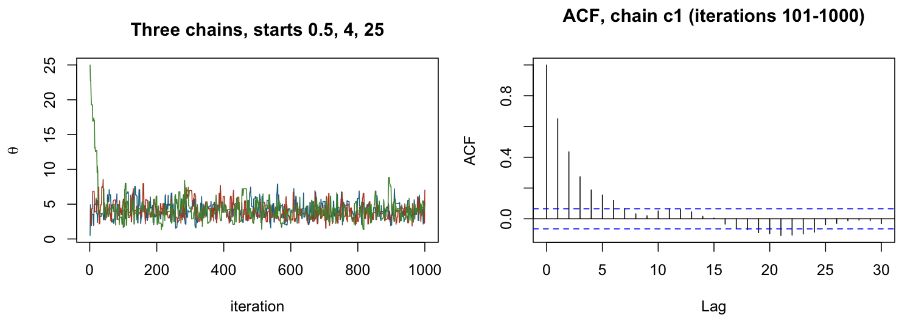

Topic 5 review, written out as an exam answer
Everything inside the red rule is what goes on your paper. The grey notes explain the reasoning, and you don't write them. Printing this page hides the notes. Final answers are to 2 d.p., as the exam asks.
Part A
Question A (17 marks). A lab measures a coating thickness \(\mu\) (microns) with two instruments. Instrument 1 gives \(x_1,\dots,x_n\) and the less precise instrument 2 gives \(y_1,\dots,y_m\). Given \((\mu,\sigma^2)\), all measurements are independent.
Model:
$$x_i\mid\mu,\sigma^2\sim\text{Normal}(\mu,\ \sigma^2),\qquad y_j\mid\mu,\sigma^2\sim\text{Normal}(\mu,\ 2\sigma^2).$$Prior: \(\mu\) and \(\sigma^2\) are independent a priori, with
$$\mu\sim\text{Normal}(2,\ 1),\qquad\sigma^2\sim\text{Inverse-Gamma}(3,\ 2)\quad\text{(shape, scale)}.$$The data are \(x=(2.1,\ 1.7,\ 2.6,\ 1.9)\) (so \(n=4\), \(\sum x_i=8.3\)) and \(y=(2.8,\ 1.4)\) (so \(m=2\), \(\sum y_j=4.2\)). Normal\((\text{mean},\text{variance})\); Gamma(shape \(\nu\), rate \(\beta\)) has density \(\frac{\beta^\nu}{\Gamma(\nu)}x^{\nu-1}e^{-\beta x}\) for \(x>0\), with \(\Gamma(4)=6\).
(a) Derive the conditional distribution \(p(\mu\mid\sigma^2,x,y)\). If it is a known distribution, identify the distribution name and its parameters. [5]
(b) We use Metropolis–Hastings for \((\mu,\sigma^2)\). For the current values \((\mu^c,\sigma^{2c})\) propose new values \((\mu^*,\sigma^{2*})\) as follows: first \(\sigma^{2*}\sim\text{Gamma}\big(\text{shape}=4,\ \text{rate}=4/\sigma^{2c}\big)\), then \(\mu^*\sim\text{Normal}\big(\text{mean}=\mu^c,\ \text{variance}=\sigma^{2*}/2\big)\). Compute the acceptance probability when \((\mu^c,\sigma^{2c})=(2.0,\ 0.5)\) and \((\mu^*,\sigma^{2*})=(2.4,\ 0.4)\). Show your work. [6]
(c) Approximate the posterior by \(q(\mu,\sigma^2)=q_\mu(\mu)\,q_{\sigma^2}(\sigma^2)\), chosen by coordinate ascent variational inference, \(q^*_j(\theta_j)\propto\exp\{E_{-j}[\log p(x,y,\mu,\sigma^2)]\}\). Derive \(q^*_{\sigma^2}(\sigma^2)\). If it is a known distribution, identify its name and parameters; they may contain \(E_\mu[\mu]\) and \(V_\mu[\mu]\). Then evaluate them when \(E_\mu[\mu]=2.1\) and \(V_\mu[\mu]=0.05\), and give \(E[\sigma^2]\) under \(q^*_{\sigma^2}\). [6]
Write thisDon't write this
(a) · \(p(\mu\mid\sigma^2,x,y)\) [5]
Keep factors with \(\mu\). The \(y\) variance is \(2\sigma^2\), so its exponent has \(4\sigma^2\):
$$\begin{aligned} p(\mu\mid\sigma^2,x,y)&\propto\exp\Big\{-\frac1{2\sigma^2}\sum_i(x_i-\mu)^2\Big\}\exp\Big\{-\frac1{4\sigma^2}\sum_j(y_j-\mu)^2\Big\}\\ &\qquad\times\exp\Big\{-\frac12(\mu-2)^2\Big\} \end{aligned}$$Expand and collect:
$$\begin{aligned} \text{exponent}&=-\frac1{2\sigma^2}\Big[n\mu^2-2\mu\sum_ix_i\Big]-\frac1{4\sigma^2}\Big[m\mu^2-2\mu\sum_jy_j\Big]\\ &\qquad-\frac12\big[\mu^2-4\mu\big]+\text{const}\\ &=-\frac12\Big[\Big(\frac n{\sigma^2}+\frac m{2\sigma^2}+1\Big)\mu^2-2\Big(\frac{\sum_ix_i}{\sigma^2}+\frac{\sum_jy_j}{2\sigma^2}+2\Big)\mu\Big]+\text{const}\\ &=-\frac A2\mu^2+B\mu+\text{const} \end{aligned}$$With \(n=4\), \(m=2\), \(\sum_ix_i=8.3\), \(\sum_jy_j=4.2\):
$$\begin{aligned} A&=1+\frac{n+m/2}{\sigma^2}\\ &=1+\frac5{\sigma^2}\\ B&=2+\frac{\sum_ix_i+\frac12\sum_jy_j}{\sigma^2}\\ &=2+\frac{8.3+2.1}{\sigma^2}\\ &=2+\frac{10.4}{\sigma^2} \end{aligned}$$Complete the square:
$$\begin{aligned} p(\mu\mid\sigma^2,x,y)&\propto\exp\Big\{-\frac A2\Big(\mu-\frac BA\Big)^2\Big\}\\ \frac BA&=\frac{2\sigma^2+10.4}{\sigma^2+5}\\ \frac1A&=\frac{\sigma^2}{\sigma^2+5} \end{aligned}$$\(\mu\mid\sigma^2,x,y\sim\text{Normal}\Big(\dfrac{2\sigma^2+10.4}{\sigma^2+5},\ \dfrac{\sigma^2}{\sigma^2+5}\Big)\)
(b) · Acceptance probability [6]
With \(Q(\mu)=\sum_i(x_i-\mu)^2+\tfrac12\sum_j(y_j-\mu)^2\), the target keeps every power of \(\sigma^2\):
$$\begin{aligned} \alpha&=\min\Big\{1,\ \frac{\pi(\mu^*,\sigma^{2*})}{\pi(\mu^c,\sigma^{2c})}\cdot\frac{q(\mu^c,\sigma^{2c}\mid\mu^*,\sigma^{2*})}{q(\mu^*,\sigma^{2*}\mid\mu^c,\sigma^{2c})}\Big\}\\ \pi(\mu,\sigma^2)&\propto(\sigma^2)^{-3}e^{-Q(\mu)/(2\sigma^2)}\cdot e^{-(\mu-2)^2/2}\cdot(\sigma^2)^{-4}e^{-2/\sigma^2} \end{aligned}$$Values of \(Q\):
$$\begin{aligned} Q(2.0)&=\big[0.1^2+0.3^2+0.6^2+0.1^2\big]+\tfrac12\big[0.8^2+0.6^2\big]\\ &=0.47+0.50\\ &=0.97\\ Q(2.4)&=\big[0.3^2+0.7^2+0.2^2+0.5^2\big]+\tfrac12\big[0.4^2+1.0^2\big]\\ &=0.87+0.58\\ &=1.45 \end{aligned}$$Target factors, new over current:
$$\begin{aligned} \text{(i) likelihood}&=\Big(\frac{0.4}{0.5}\Big)^{-3}\exp\Big\{-\frac12\Big[\frac{1.45}{0.4}-\frac{0.97}{0.5}\Big]\Big\}\\ &=1.9531\,e^{-\frac12(3.625-1.94)}\\ &=1.9531\,e^{-0.8425}\\ &=1.9531(0.4306)\\ &=0.8411\\ \text{(ii) prior on }\mu&=\exp\Big\{-\frac12\big[(0.4)^2-0^2\big]\Big\}\\ &=e^{-0.08}\\ &=0.9231\\ \text{(iii) prior on }\sigma^2&=\Big(\frac{0.4}{0.5}\Big)^{-4}\exp\Big\{-2\Big[\frac1{0.4}-\frac1{0.5}\Big]\Big\}\\ &=2.4414\,e^{-1}\\ &=2.4414(0.3679)\\ &=0.8981 \end{aligned}$$Proposal for \(\sigma^2\): rate 8 forward, 10 in reverse, with \(\Gamma(4)=6\):
$$\begin{aligned} q(\sigma^{2*}\mid\sigma^{2c})&=\frac{8^4}6(0.4)^3e^{-8(0.4)}\\ &=1.7809\\ q(\sigma^{2c}\mid\sigma^{2*})&=\frac{10^4}6(0.5)^3e^{-10(0.5)}\\ &=1.4037\\ \text{(iv) ratio}&=\frac{1.4037}{1.7809}\\ &=0.7882 \end{aligned}$$Proposal for \(\mu\): variance \(0.4/2=0.2\) forward, \(0.5/2=0.25\) in reverse, squared step \(0.16\) both ways:
$$\begin{aligned} \text{(v) ratio}&=\frac{(2\pi\cdot0.25)^{-1/2}e^{-0.16/(2\cdot0.25)}}{(2\pi\cdot0.2)^{-1/2}e^{-0.16/(2\cdot0.2)}}\\ &=\sqrt{\frac{0.2}{0.25}}\,e^{-0.32+0.40}\\ &=0.8944(1.0833)\\ &=0.9689 \end{aligned}$$Multiply:
$$\begin{aligned} 0.8411\times0.9231&=0.7764\\ 0.7764\times0.8981&=0.6973\\ 0.6973\times0.7882&=0.5496\\ 0.5496\times0.9689&=0.5326\\ \alpha&=\min\{1,\ 0.5326\}\\ &=0.53 \end{aligned}$$\(\alpha=0.53\)
Reverse \(\mu\) variance uses the state being returned to, \(\sigma^{2c}\). Without any proposal ratio you'd get 0.70.
(c) · \(q^*_{\sigma^2}\) [6]
Log joint:
$$\begin{aligned} \log p(x,y,\mu,\sigma^2)&=-\frac{n+m}2\log\sigma^2-\frac{Q(\mu)}{2\sigma^2}\\ &\quad-\frac12(\mu-2)^2-(3+1)\log\sigma^2-\frac2{\sigma^2}+\text{const} \end{aligned}$$Keep the \(\sigma^2\) terms and take \(E_\mu\):
$$\begin{aligned} \log q^*_{\sigma^2}(\sigma^2)&=-\Big(3+\frac{n+m}2+1\Big)\log\sigma^2-\frac{2+\frac12E_\mu[Q(\mu)]}{\sigma^2}+\text{const} \end{aligned}$$Use \(E_\mu[(c-\mu)^2]=(c-E[\mu])^2+V[\mu]\):
$$\begin{aligned} E_\mu[Q(\mu)]&=\sum_i(x_i-E[\mu])^2+nV[\mu]+\frac12\Big[\sum_j(y_j-E[\mu])^2+mV[\mu]\Big] \end{aligned}$$The kernel is \((\sigma^2)^{-\text{shape}-1}e^{-\text{scale}/\sigma^2}\):
\(q^*_{\sigma^2}=\text{Inverse-Gamma}\Big(3+\dfrac{n+m}2,\ 2+\dfrac12E_\mu[Q(\mu)]\Big)\) with \(E_\mu[Q]\) as above
Numbers:
$$\begin{aligned} \textstyle\sum_i(x_i-2.1)^2&=0+0.16+0.25+0.04\\ &=0.45\\ \textstyle\sum_j(y_j-2.1)^2&=0.49+0.49\\ &=0.98\\ E_\mu[Q]&=0.45+4(0.05)+\tfrac12\big[0.98+2(0.05)\big]\\ &=0.65+0.54\\ &=1.19\\ \text{shape}&=3+\tfrac62\\ &=6\\ \text{scale}&=2+\tfrac12(1.19)\\ &=2.595\\ E[\sigma^2]&=\frac{\text{scale}}{\text{shape}-1}\\ &=\frac{2.595}5\\ &=0.52 \end{aligned}$$Inverse-Gamma\((6,\ 2.60)\), \(E[\sigma^2]=0.52\)
\(4\sigma^2\) in the \(y\) exponent · \(A\), \(B\) · both power-of-\(\sigma^2\) factors · both proposal ratios with the parameter changing · product and min · \(V[\mu]\) in the rate · ½ on the \(y\) sum · Inverse-Gamma, not Gamma.
Part B
Question B (10 marks). A plant makes a polymer in \(J=4\) batches, with \(n_j=5\) viscosity readings per batch. Write \(y_{ij}\) for reading \(i\) of batch \(j\), \(\bar y_j\) for the batch mean, and \(\theta_j\) for the true mean viscosity of batch \(j\).
Model: given all parameters, the \(y_{ij}\) are independent with
$$y_{ij}\mid\theta_j,\tau\sim\text{Normal}\Big(\theta_j,\ \frac1\tau\Big),\qquad\theta_j\mid\mu,\tau_\theta\sim\text{Normal}\Big(\mu,\ \frac1{\tau_\theta}\Big)\quad(j=1,\dots,J,\ \text{independent}).$$Prior: \(\mu\), \(\tau\), \(\tau_\theta\) independent, with \(\mu\sim\text{Normal}(10,\ 25)\), \(\tau\sim\text{Gamma}(2,\ 1)\), \(\tau_\theta\sim\text{Gamma}(3,\ 2)\) (shape, rate).
(a) Derive the conditional distribution \(p(\mu\mid\theta_1,\dots,\theta_J,\tau_\theta,\tau,y)\). If it is a known distribution, identify the distribution name and its parameters. [4]
(b) Suppose \(\theta=(9.2,\ 10.5,\ 8.8,\ 11.1)\) and \(\tau_\theta=1.5\). Evaluate the mean and variance of the distribution in (a). [2]
(c) Give, with name and parameters, the full conditionals of \(\theta_j\) and of \(\tau_\theta\). One line of reasoning each is enough. [2]
(d) Briefly describe a Gibbs sampling scheme for \((\theta_1,\dots,\theta_J,\mu,\tau,\tau_\theta)\), and say what the conditional of \(\theta_j\) tells you about how much each batch is pulled toward \(\mu\). [2]
Write thisDon't write this
(a) · \(p(\mu\mid\theta,\tau_\theta,\tau,y)\) [4]
Keep factors containing \(\mu\): the \(J\) priors of \(\theta_j\) and the prior of \(\mu\). With \(m_0=10\), \(\kappa_0=\frac1{25}=0.04\):
$$\begin{aligned} p(\mu\mid\cdot)&\propto\prod_{j=1}^J\exp\Big\{-\frac{\tau_\theta}2(\theta_j-\mu)^2\Big\}\exp\Big\{-\frac{\kappa_0}2(\mu-m_0)^2\Big\} \end{aligned}$$Expand and collect:
$$\begin{aligned} \text{exponent}&=-\frac{\tau_\theta}2\Big[J\mu^2-2\mu\sum_j\theta_j\Big]-\frac{\kappa_0}2\big[\mu^2-2m_0\mu\big]+\text{const}\\ &=-\frac12\Big[(J\tau_\theta+\kappa_0)\mu^2-2\Big(\tau_\theta\sum_j\theta_j+\kappa_0m_0\Big)\mu\Big]+\text{const}\\ &=-\frac A2\mu^2+B\mu+\text{const} \end{aligned}$$with \(A=\kappa_0+J\tau_\theta\) and \(B=\kappa_0m_0+\tau_\theta\sum_j\theta_j\). Complete the square:
\(\mu\mid\cdot\sim\text{Normal}\Big(\dfrac{0.4+\tau_\theta\sum_j\theta_j}{0.04+J\tau_\theta},\ \dfrac1{0.04+J\tau_\theta}\Big)\)
No \(y_{ij}\) in it: the data reach \(\mu\) only through the \(\theta_j\).
(b) · Numbers [2]
Mean \(9.90\), variance \(0.17\)
(c) · Other conditionals [2]
\(\theta_j\): keep batch \(j\)'s likelihood and the prior of \(\theta_j\), using \(\sum_i(y_{ij}-\theta_j)^2=\text{const}+n_j(\bar y_j-\theta_j)^2\):
$$\begin{aligned} p(\theta_j\mid\cdot)&\propto\exp\Big\{-\frac\tau2\sum_i(y_{ij}-\theta_j)^2-\frac{\tau_\theta}2(\theta_j-\mu)^2\Big\}\\ \theta_j\mid\cdot&\sim\text{Normal}\Big(\frac{n_j\tau\bar y_j+\tau_\theta\mu}{n_j\tau+\tau_\theta},\ \frac1{n_j\tau+\tau_\theta}\Big) \end{aligned}$$\(\tau_\theta\): keep \(\tau_\theta^{J/2}\) and its Gamma prior:
$$\begin{aligned} p(\tau_\theta\mid\cdot)&\propto\tau_\theta^{J/2}e^{-\frac{\tau_\theta}2\sum_j(\theta_j-\mu)^2}\tau_\theta^{3-1}e^{-2\tau_\theta}\\ \tau_\theta\mid\cdot&\sim\text{Gamma}\Big(3+\frac J2,\ 2+\frac12\sum_j(\theta_j-\mu)^2\Big) \end{aligned}$$(d) · Gibbs and shrinkage [2]
- Choose starting values for \(\theta_j\), \(\mu\), \(\tau\), \(\tau_\theta\).
- For \(t=1,\dots,T\): draw each \(\theta_j^{(t)}\); then \(\mu^{(t)}\) using the new \(\theta\); then \(\tau^{(t)}\) using the new \(\theta\); then \(\tau_\theta^{(t)}\) using the new \(\theta\) and \(\mu\).
- Discard burn-in and average functions of the remaining draws.
Shrinkage: the conditional mean of \(\theta_j\) is \(w\bar y_j+(1-w)\mu\) with
$$\begin{aligned} w&=\frac{n_j\tau}{n_j\tau+\tau_\theta} \end{aligned}$$A large \(\tau_\theta\) makes \(w\) small and pulls \(\theta_j\) toward \(\mu\); a small \(\tau_\theta\) leaves each batch near its own mean.
Also needed for the scheme: \(\tau\mid\theta,y\sim\text{Gamma}\big(2+\frac N2,\ 1+\frac12\sum_j\sum_i(y_{ij}-\theta_j)^2\big)\), \(N=20\).
No \(y\) in the \(\mu\) conditional · \(A\), \(B\) · Normal with mean and variance · 9.90, 0.17 · \(\theta_j\) and \(\tau_\theta\) conditionals · newest values, burn-in · \(w\) and shrinkage.
Part C
Question C (8 marks). A binomial experiment gives \(y=1\) success in 4 trials, with a Uniform(0,1) prior on the success probability \(p\). The posterior is known up to a constant: \(p(p\mid y)\propto\tilde f(p)=p(1-p)^3\) on \((0,1)\), and \(Z=\int_0^1\tilde f(p)\,dp=0.05\).
(a) Give a rejection sampler for \(p\mid y\) that uses Uniform(0,1) candidates, and find the smallest valid \(M\) by calculus. [2]
(b) Find the probability that one candidate is accepted. [1]
The sampler was run until 2000 draws were accepted, with this output (real R output):
> set.seed(2818) > ft <- function(p) p*(1-p)^3 > M <- ft(1/4) > draws <- numeric(2000); tries <- 0; k <- 0 > while (k < 2000) { + tries <- tries + 1 + cand <- runif(1) + if (runif(1) <= ft(cand)/M) { k <- k + 1; draws[k] <- cand } + } > round(c(M = M, tries = tries, rate = 2000/tries), 4) M tries rate 0.1055 4200.0000 0.4762 > ph <- mean(draws > 0.5) > round(c(mean = mean(draws), sd = sd(draws), phat = ph), 4) mean sd phat 0.3334 0.1815 0.1950
(c) What does mean(draws > 0.5) estimate? Give its Monte Carlo standard error and an approximate 95% interval. Is the MC standard error the posterior standard deviation? [2]
(d) The posterior of another parameter \(\theta\) is sampled by random-walk Metropolis, \(\theta^*\sim N(\theta^c,2.5^2)\), from three starting values \(0.5\), \(4\) and \(25\) (chains c1, c2, c3, 1000 iterations each). The trace plots and the ACF of c1 over iterations 101–1000 are below, with R output.

c1, iterations 101–1000.> round(c(acc.c1 = mean(diff(chs[,1]) != 0), acc.c2 = mean(diff(chs[,2]) != 0), acc.c3 = mean(diff(chs[,3]) != 0)), 2) acc.c1 acc.c2 acc.c3 0.47 0.44 0.44 > early <- chs[1:100, ]; late <- chs[101:1000, ] > round(apply(early, 2, sd), 2) c1 c2 c3 1.20 1.42 5.74 > round(sd(as.vector(early)), 2) [1] 3.7 > round(apply(late, 2, sd), 2) c1 c2 c3 1.13 1.11 1.23 > round(sd(as.vector(late)), 2) [1] 1.16 > x <- late[, 1] > round(c(n = length(x), mean = mean(x), sd = sd(x), rho1 = acf(x, plot = FALSE)$acf[2]), 2) n mean sd rho1 900.00 4.19 1.13 0.65
(i) With the BGR statistic \(\hat R=B/W\) (\(B\) the sd of the pooled draws, \(W\) the average within-chain sd), compute \(\hat R\) for iterations 1–100 and for 101–1000 and say what you conclude about burn-in. [1]
(ii) Compute the effective sample size of c1 over 101–1000 and the standard error of its mean, and compare with the naive \(s/\sqrt n\). [1]
(iii) Is the step size 2.5 too small, about right or too large? Give the evidence from the output. [1]
Write thisDon't write this
(a) · Rejection sampler [2]
Draw \(P\sim U(0,1)\) (so \(g=1\)) and independently \(U\sim U(0,1)\). Accept \(P\) if \(U\le\tilde f(P)/M\), otherwise repeat. Smallest \(M\):
$$\begin{aligned} \tilde f'(p)&=(1-p)^3-3p(1-p)^2\\ &=(1-p)^2(1-4p)=0\\ p^*&=\tfrac14\quad(p=1\text{ gives }\tilde f=0)\\ M&=\tfrac14\big(\tfrac34\big)^3\\ &=\tfrac{27}{256}\\ &=0.1055 \end{aligned}$$\(\tilde f'\gt0\) for \(p\lt\frac14\) and \(\tilde f'\lt0\) for \(p\gt\frac14\), so it is a maximum.
\(M=27/256=0.11\)
(b) · Acceptance probability [1]
\(P(\text{accept})=0.47\)
(c) · Monte Carlo SE [2]
mean(draws > 0.5) estimates \(P(p\gt0.5\mid y)\). The draws are independent:
No: the MC SE measures the error of \(\hat p\) and shrinks like \(1/\sqrt N\). The posterior sd of \(p\) (0.18 here) is a property of the posterior and doesn't shrink with \(N\).
SE \(=0.01\), 95% interval \((0.18,\ 0.21)\)
(d) · Diagnostics [3]
(i) Iterations 1–100, then 101–1000:
$$\begin{aligned} W&=\frac{1.20+1.42+5.74}3=2.79\\ \hat R&=\frac{3.70}{2.7867}\\ &=1.33\\ W&=\frac{1.13+1.11+1.23}3=1.16\\ \hat R&=\frac{1.16}{1.1567}\\ &=1.00 \end{aligned}$$\(1.33\gt1.05\): iterations 1–100 aren't stationary. \(1.00\lt1.05\): 101–1000 can be pooled. A burn-in of 100 is safe.
(ii)
$$\begin{aligned} \text{ESS}&=900\times\frac{1-0.65}{1+0.65}\\ &=190.91\\ \text{SE}&=\frac{1.13}{\sqrt{190.91}}\\ &=\frac{1.13}{13.82}\\ &=0.08\\ \text{SE}_{\text{naive}}&=\frac{1.13}{\sqrt{900}}\\ &=0.04 \end{aligned}$$The honest SE is twice the naive one.
(iii) About right: acceptance 0.47, 0.44, 0.44 sit in the usual 0.2–0.5 band, the trace looks like a hairy caterpillar, and the ACF is inside the band by about lag 7.
Algorithm with \(M\) · calculus · \(Z/M\) · estimate named · SE and interval · MC SE vs posterior sd · both \(\hat R\) · ESS, SE, comparison · verdict with evidence.